보정 전 시제품보정 후 시제품

TURF STUDY · 03 · 2026.10.28
왼쪽은 이전 시제품, 오른쪽은 이번 보정입니다. 카메라·해상도·조명·샘플 재생 위치를 동일하게 유지했습니다. 모든 이미지는 CPU 참고 렌더이며 실제 브라우저나 휴대폰 캡처가 아닙니다.
| 평평해 보이던 원인 | 이번 변경 |
|---|---|
| 드문드문 서 있던 입체 잎 | 기존 잎 예산의 80%를 공 주변 반경 15cm에 집중합니다. 가까운 곳의 포기 밀도가 약 7.5배가 되어 잎이 겹치는 층이 보입니다. 나머지 잎으로 바깥 구간을 이어 줍니다. |
| 낮은 대비의 평면 질감 | 잎 색과 높이를 함께 생성해 잎의 결, 잘린 끝과 틈의 명암을 분리합니다. 높이 지도는 기존 노멀 텍스처의 알파 채널을 재사용합니다. |
| 비껴 볼 때도 움직이지 않던 바닥 무늬 | 가까운 곳에서는 약 1.2mm 깊이의 표면을 따라 시차를 계산하고 잎의 옆면에 빛이 다르게 닿게 합니다. 미해상도에서는 깊이 표현을 필터링합니다. |
| 보존과 비용 | 그린 3mm / 프린지 11mm / 러프 30mm와 실제 퍼팅 면, 공과 궤적은 그대로입니다. 삼각형 예산 216,000 / 118,800 / 54,000과 텍스처 자산 수는 유지했습니다. 추가 샘플링 비용과 실제 기기 성능은 미측정입니다. |
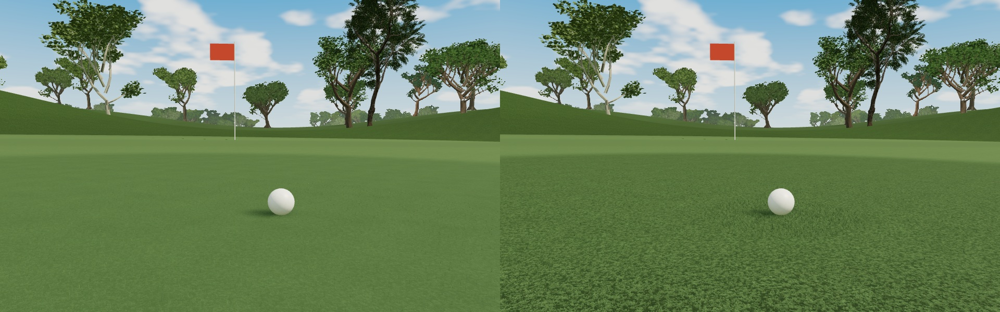
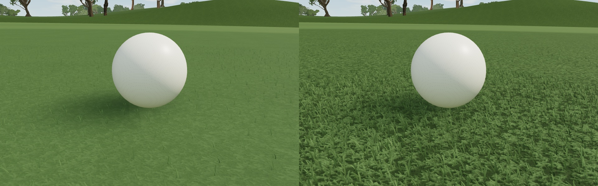
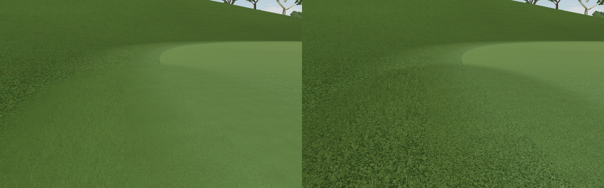
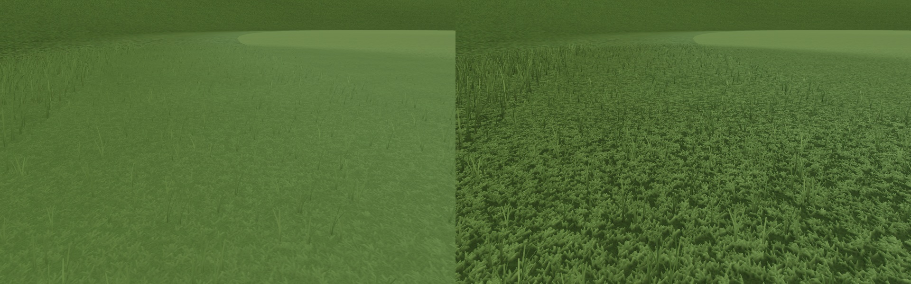
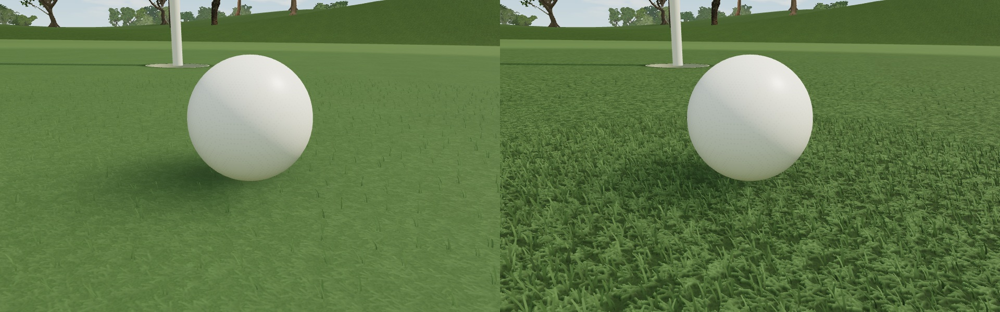
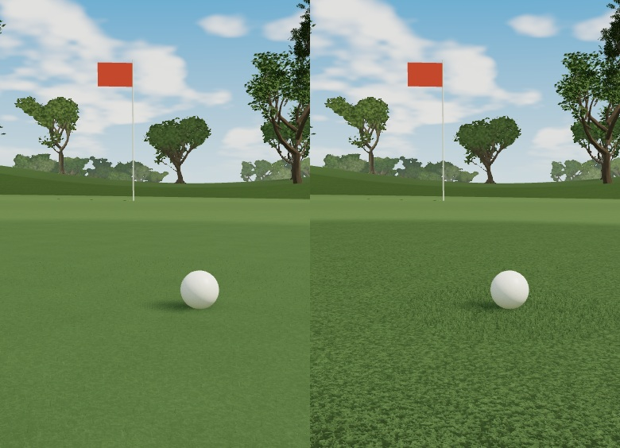
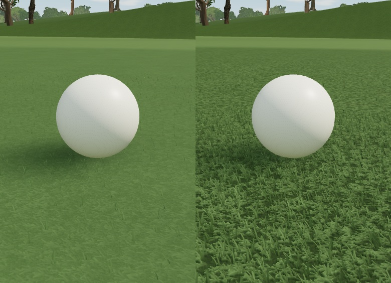
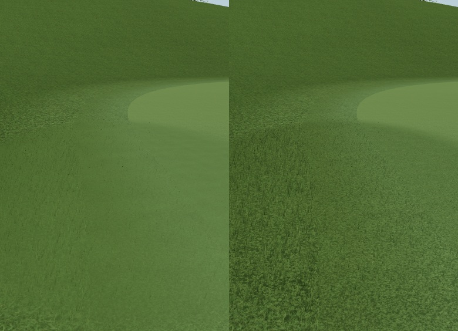
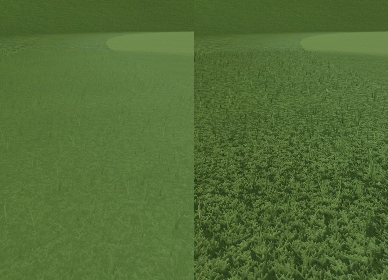
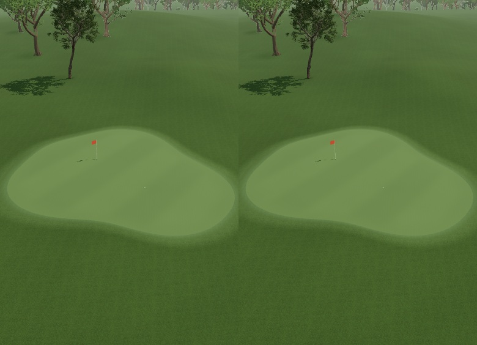
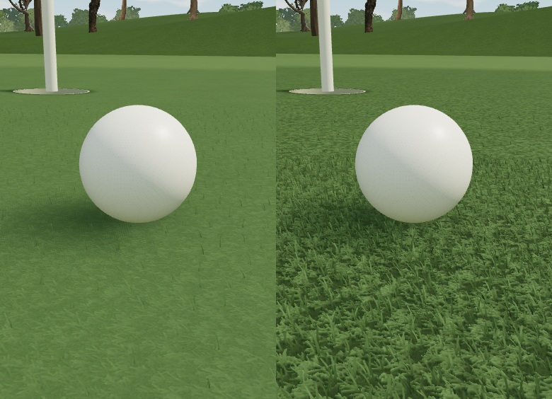
이전 원본과 비교해 기존 잔디 모드의 12개 구도는 픽셀까지 동일합니다. 새 잔디도 코스 전체 구도는 동일합니다. 수목 배치·기하와 공·홀·깃발·샘플 궤적·좌표·높이·시간을 보존했고, 보호 대상 소스 해시도 일치합니다. 정지 화면을 다시 렌더하거나 다른 재생 위치에서 돌아온 뒤에도 동일한 화면이 나오는지 검사했습니다. 원래 비교 자료는 별도로 보존했습니다.
입체 잎을 숨긴 렌더와 표면 깊이를 끈 렌더를 별도로 비교해 두 요소가 실제 화면에 기여하는지 검사했습니다. 극근접의 단순한 잎 단면, 촘촘한 구간의 경계와 움직일 때의 윤곽은 실제 화면에서 추가 판단해야 합니다.
가장 가까운 잎의 단면과 저해상도 윤곽에는 아직 보정 여지가 있습니다. 실제 브라우저의 재생·정지·탐색·카메라 이동·PNG 저장 및 움직일 때의 깜박임은 검증하지 못했습니다. 기존 개인 Chrome 창을 읽는 작업은 자동 승인 검토에서 차단됐고 작업 전용 브라우저 연결도 없었습니다. 모바일 실기기의 FPS·GPU 시간·메모리도 미측정입니다. 퍼팅은 기존 5.15초 화면 확인용 샘플입니다.